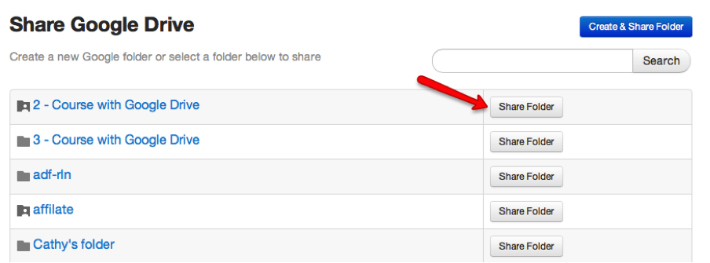
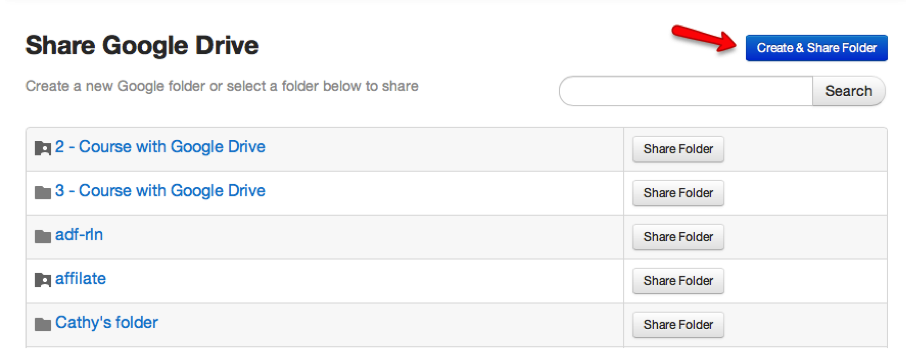
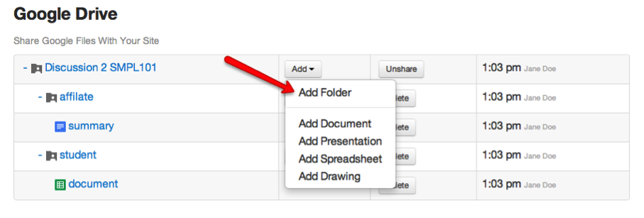
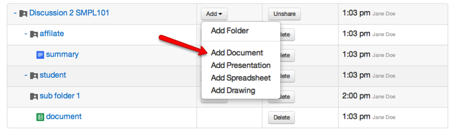
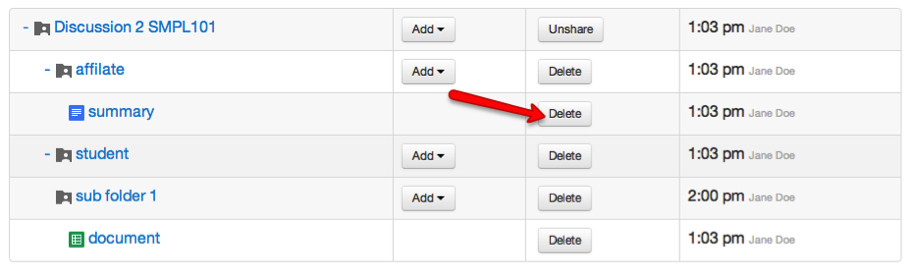
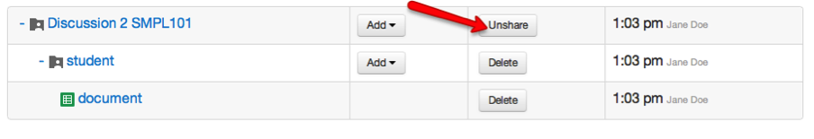

Using Google Drive LTI Print
Linking to an Existing Google Drive Folder [this is one time
per site]
This only needs to be done one time for each site.
- Click Google Drive in the left-hand menubar.
- Click the Share Folder button to the right
of the folder you wish to link.
- Select Email Notification Preference.
- If you would like to send email notifications to all members
of your site, click OK. If not, click Cancel.

Linking to a New Google Drive Folder
- Click Drive LTI in the left-hand menubar.
- Select the Create & Share Folder button.
(You can also access this folder in your Google Drive. Your Google
Drive must be open, and you will need to click Open
in Drive in the upper right-hand corner.)
- Select Email Notification Preference.
- If you would like to send email notifications to all members
of your site, click OK. If not, click Cancel.

Adding a Subfolder
- In the "Add" dropdown menu next to the folder to which you
would like to add a subfolder, select Add Folder.
- Name the folder.
- Click OK.

Adding Documents, Spreadsheets, Presentations, and Drawings
- In the "Add" dropdown menu next to the folder to which you
would like to add an item, select the type (Document, Presentation,
etc.).
- Name the item.
- Click OK.

Delete Folders and Other Items
- Click the Delete button to the right of the
item you wish to delete.
- Click OK to confirm the deletion.
NOTE: This cannot be undone. It will delete the item in Google
Drive. Deleting a folder will also delete its contents.s

Unsharing a Google Drive Folder
Click the Unshare button to the right of the the
[top??] folder
You will now be able to share a new or existing Google Drive
Folder
NOTE: Clicking Unshare unlinks the folder from
CTools, but the user will continue to be able to access the folder and
its contents directly from the Google Drive until you turn off the
sharing in the Google Drive interface.
